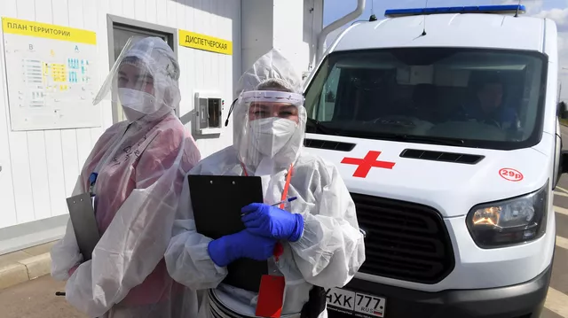
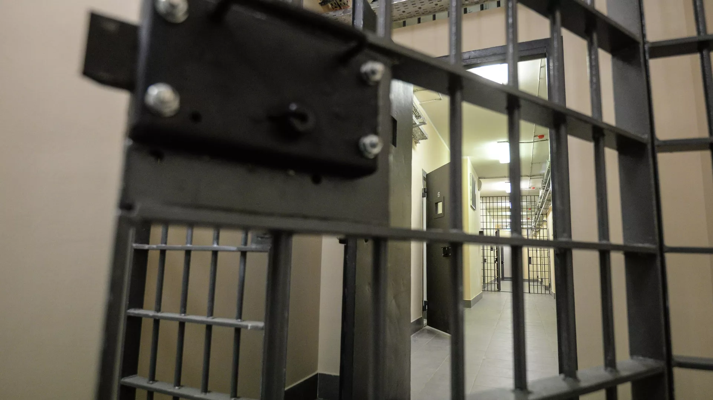

В Кисловодске появится скульптура Чебурашки
ПЯТИГОРСК, 4 фев - РИА Новости. Скульптуру Чебурашки установят на улице Карла Маркса в Кисловодске, где проходили съемки сцен из одноименной кинокартины, сообщает администрация города.
"Идею уже одобрил Общественный совет города. Скульптуру Чебурашки, героя одноименного фильма 2023 года, ставшего самым кассовым в истории российского кинематографа, планируем установить на улице Карла Маркса. Здесь проходили съёмки одной из самых эффектных сцен кинокартины. В народе улицу уже начали называть Чебурашкинской", - рассказал глава Кисловодска Евгений Моисеев, слова которого приводятся в сообщении.
По его словам, также в Кисловодске появилась традиция - в кинотеатре в конце просмотра зрители вместе с героями поют любимую песню про день рождения.
Как отмечают власти, ранее Кисловодск получил благодарность от Мосфильма за "неоценимую поддержку в создании фильма "Чебурашка".
По сюжету картины, Чебурашка - настоящий мохнатый зверек, а не плюшевая игрушка - прибывает из апельсиновой рощи далекой страны в тихий приморский городок, где ему предстоит найти себе имя, друзей и дом.
Съемки проходили в Сочи, Кисловодске и Пятигорске. Режиссером картины выступил Дмитрий Дьяченко ("О чем говорят мужчины", "Кухня в Париже", "Последний богатырь").
В ролях - Сергей Гармаш, Ольга Кузьмина, Федор Добронравов, Сергей Лавыгин, Елена Яковлева, Полина Максимова и другие.

Женщина в Туве, заразившаяся "кракеном", выздоровела
КРАСНОЯРСК, 4 фев - РИА Новости. Женщина в Туве, у которой обнаружили подвариант коронавируса "кракен", успешно излечилась от заболевания, сообщил в своем телеграм-канале глава региона Владислав Ховалыг.
Ранее пресс-служба Роспотребнадзора сообщала, что в Туве выявлен второй в России случай заражения подвариантом "омикрона" XBB 1.5 "кракен", болезнь протекает в легкой форме. Глава Тувы уточнил, что это первый случай заболевания в Сибири.
"Женщина, у которой выявлен новый подвариант коронавируса, уже прошла курс лечения и выписана. Болезнь проходила в легкой степени. Тем не менее, нам нельзя терять бдительности. Напоминаю, что в местах массового скопления людей, в больницах, во всех закрытых помещениях необходимо соблюдать масочный режим", - говорится в сообщении главы региона.

ЛДПР предложила уточнить нормы о содержании в СИЗО после приговора суда
МОСКВА, 4 фев - РИА Новости. Фракция ЛДПР разработала законопроект о зачете дня в СИЗО, в том числе после вынесения приговора суда, за полтора дня в колонии общего режима, текст инициативы имеется в распоряжении РИА Новости.
Изменения планируется внести в часть 2 статьи 60 и статью 75 Уголовно-исполнительного кодекса РФ.
"Время нахождения осужденного в следственном изоляторе до направления его к месту отбывания наказания засчитывается в срок лишения свободы из расчета один день за: один день отбывания наказания в тюрьме либо исправительной колонии строгого или особого режима; полтора дня отбывания наказания в воспитательной колонии либо исправительной колонии общего режима; два дня отбывания наказания в колонии-поселении", - говорится в тексте законопроекта.
Протоиерей предложил переименовать Волгоград в Царицын
МОСКВА, 4 фев - РИА Новости. Волгоград было бы справедливо переименовать не в Сталинград, а в Царицын, восстановив историческое название и избежав конфликта в обществе, считает председатель экспертного совета по церковному искусству, архитектуре и реставрации Русской православной церкви (РПЦ), член Патриаршего совета по культуре протоиерей Леонид Калинин.
"Полагаю, что было бы справедливо переименовать этот город в то название, которое было в царское время: Царицын. Это было бы, наверное, самым правильным, потому что Волгоград – это ни о чем, а Сталинград – вызовет слишком много споров. А вот вернуть городу историческое название, под которым он был основан, на мой взгляд, было бы правильно.
И тогда все сторонники Сталинграда могли бы Царицын именовать по-своему в своем внутреннем общении, а те, кто за Волгоград – тоже не возражали бы; такое у меня мнение", - сказал протоиерей РИА Новости.